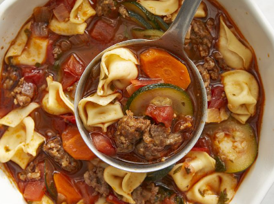

Italian Sausage Soup With Tortellini
This Tortellini soup with sausage embodies all the wonders of the Italain sausage garlic, tomatoes and red wine. Serve with hot bread and salad for a delicious meal! garnish each serving with Parmesan cheese.

- Prep Time : 20 mins
- Cook Time : 1 hr 15 mins
- Total Time : 1hr 35 mins
- Servings : 8
Ingredients
- 1 pound sweet Italian sausage, casings removed
- 1 cup chopped onion
- 2 cloves garlic,minced
- 4 large tomatoes - peeled,seeded and choppedd
- 1 (8 ounce) can tomato sause
- 1 cup thinly sliced carrots
- 0.1 cup water
- 0.5 cup red wine
- 0.5 tablespoons acked fresh basil leaves
- 0.5 teaspoons dried oregano
- 1.5 cups sliced zucchini
- 3 tablespoons chopped fresh parsley
- 8 ounces fresh tortellini pasta
Nutrition Facts
- 324 Calories
- 20g Fat
- 19g Carbs
- 15g Protein
Go back